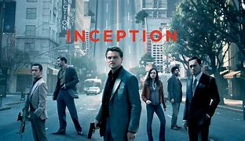
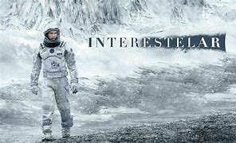

Inception: A Origem (2010)
Um ladrão que invade os sonhos das pessoas para roubar segredos corporativos deve plantar uma ideia na mente de um alvo.

Interestelar (2014)
Uma equipe de exploradores viaja por um buraco de minhoca no espaço na tentativa de garantir a sobrevivência da humanidade.

Perdido em Marte (2015)
Um astronauta fica preso em Marte e precisa usar sua engenhosidade para sobreviver enquanto aguarda resgate.